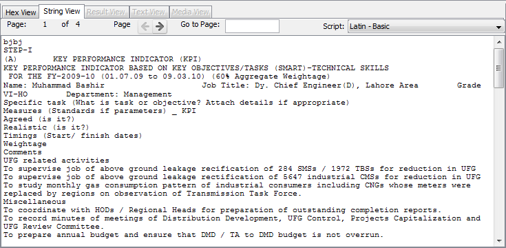

Strings Content Viewer scans (potentially binary) data of the file / folder and searches it for data that could be text. When appropriate data is found, the String Content Viewer shows data strings extracted from binary, decoded, and interpreted as UTF8/16 for the selected script/language.
Note that this is different from the Text Content Viewer, which displays the text for a file that is stored in the keyword search index. The results may be the same or they could be different, depending how the data were interpreted by the indexer.
Below is an example of "String Content Viewer" window:
